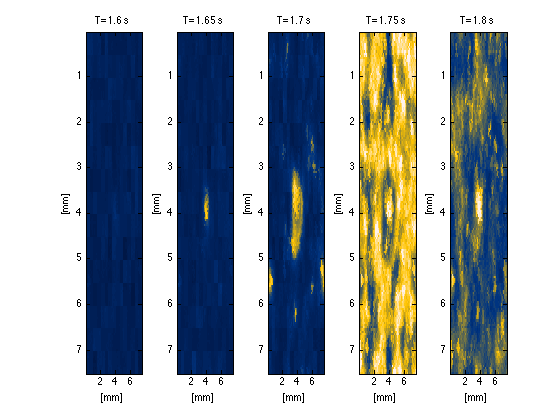

This is the readme for the models associated with: Dynamic mechanisms of neocortical focal seizure onset Y. Wang, M. Goodfellow, P.N. Taylor, G. Baier PLOS Computational Biology (2014) This MATLAB code was contributed by Yujiang.Wang at newcastle.ac.uk To run this code, it is important to includ the lib folder in your path (as done in startup.m). Some of the scripts require a lot of memory (up to 2GB), and can be very slow depending on the machine you run it on. An easy way to get around this is to reduce the system size (e.g. n=50). basicSim.m and basicSimDelay.m demonstrate how a basic simulation can be obtained. To understand the functions in lib, it is recommended to go through these two files step by step. basicSimDelay.m essentially simulates the same system as basicSim.m, only with delay times included. The lib folder includes the functions to create your own patchy remote connectivity matrices. To download the code version with all the precalculated connectivity matrices, please go to the code & resources section on the author's website http://ywang.co.uk/ The files Fig*.m can be used to reproduce the time series in the figures 4-8 in the publication. Example run: Type at the matlab command prompt: startup Fig4_runRampFocal After a little while (30 seconds on a 2013 MacBook Pro laptop) a few figures appear including this one: 